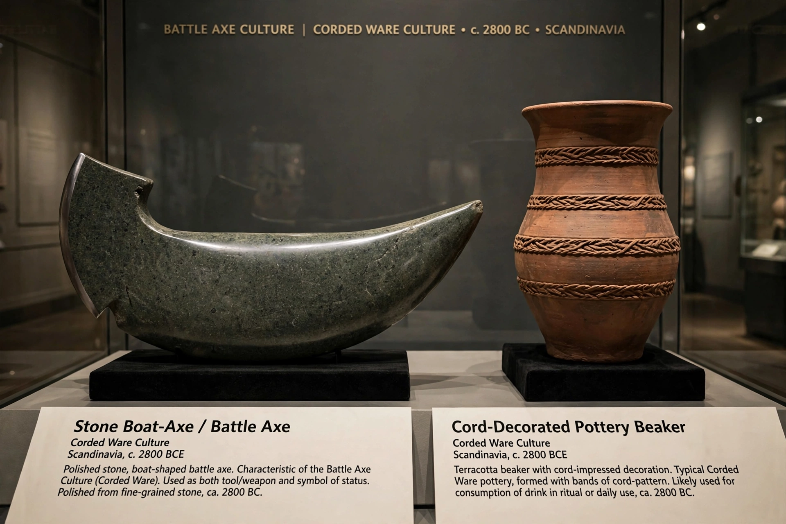

The Battle Axe culture, also called the Boat Axe culture, is a Chalcolithic culture that flourished on the coast of the Baltic Sea and in Scandinavia from c. 2800 BC to c. 2300 BC. It is regarded as the Scandinavian branch of the Corded Ware culture.

It is named for its distinctive boat-shaped stone battle axes. Burials were typically single graves with the axe, pottery and other goods. Ancient DNA studies show substantial steppe-related ancestry, linked to migrations associated with early Indo-European languages.